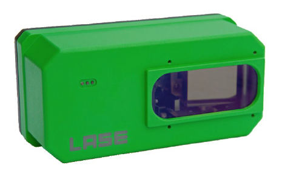

LASE 2000D-Series
The laser scanners out of our LASE 2000D-Series are two-dimensional contactless distance measuring systems built for the industrial environment, which are also usable for outdoor applications. The scanner interface outputs the contour data on the recorded surroundings by working with constant raw data incorporating with distance and angle values.
For more detailed information about the LASE 2000D-Series and especially about the LASE 2000D 226 visite the LASE product website.